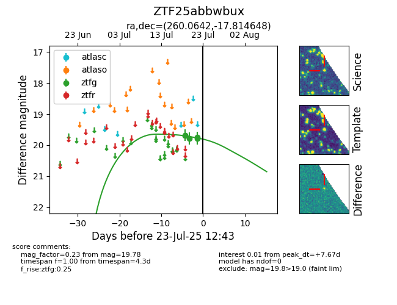

Target ZTF25abbwbux at 2025-07-23 12:43, see:
FINK: fink-portal.org/ZTF25abbwbux
Lasair: lasair-ztf.lsst.ac.uk/objects/ZTF25abbwbux
ALeRCE: alerce.online/object/ZTF25abbwbux
alt names
ZTF25abbwbux (ztf,fink)
coordinates:
equatorial (ra, dec) = (260.0642,-17.81465)
galactic (l, b) = (6.2817,+10.88159)
photometry
last ztfg=19.78
5 ztfg detections
